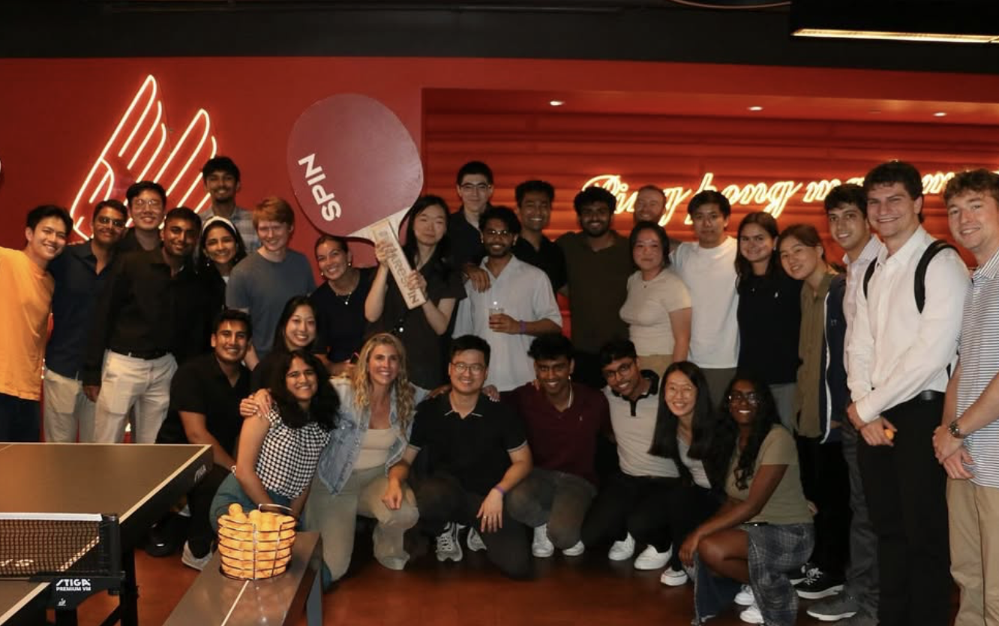
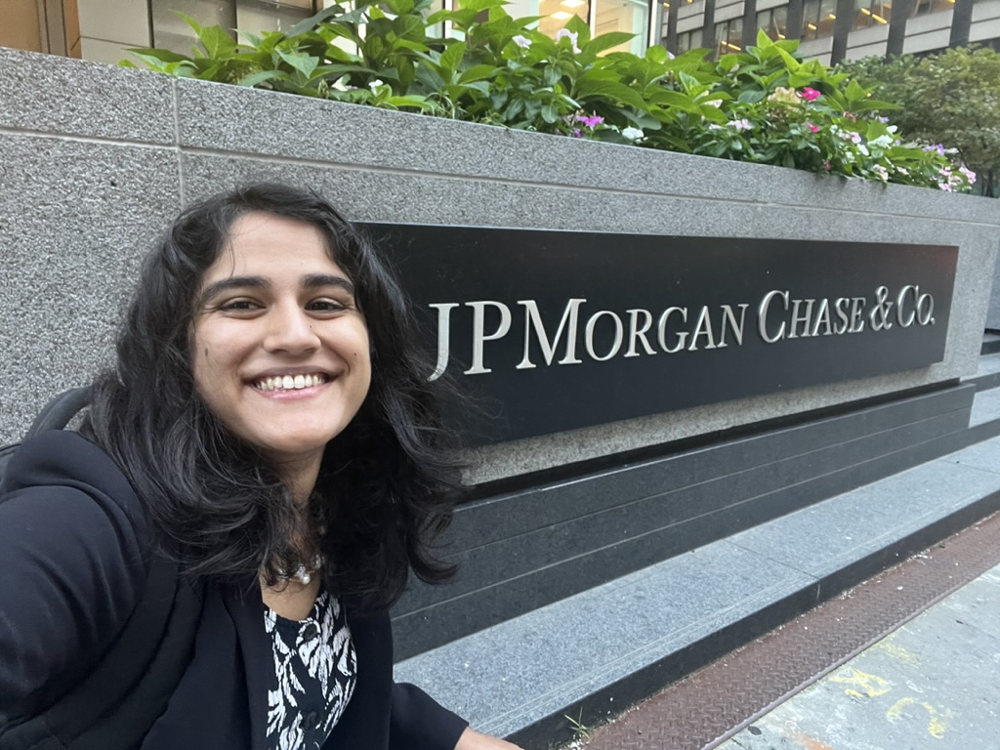
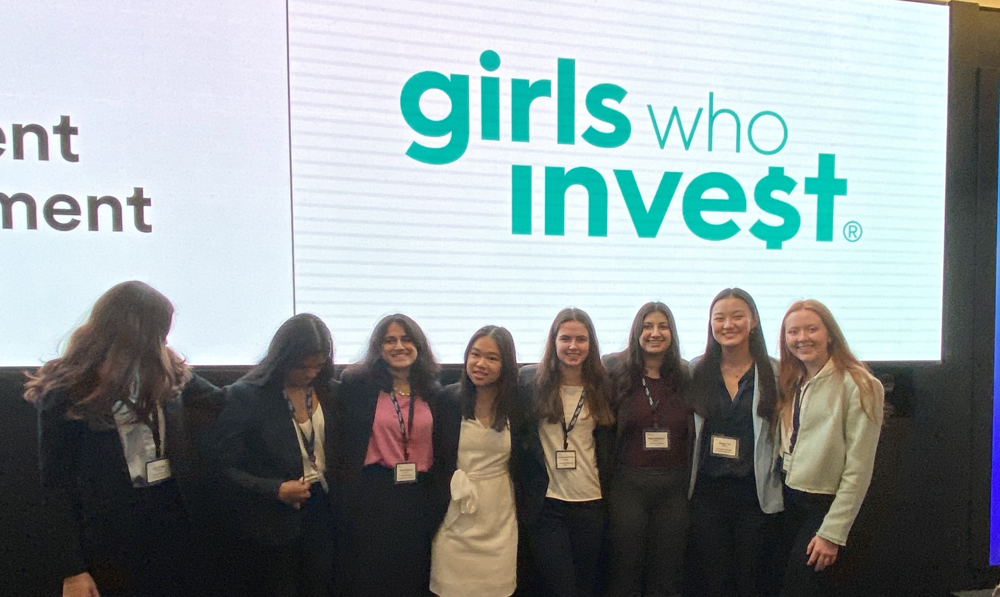
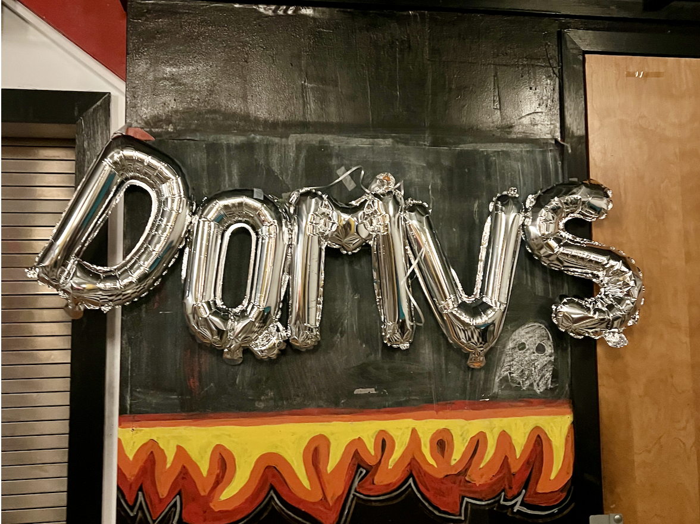
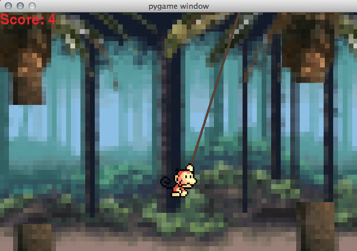
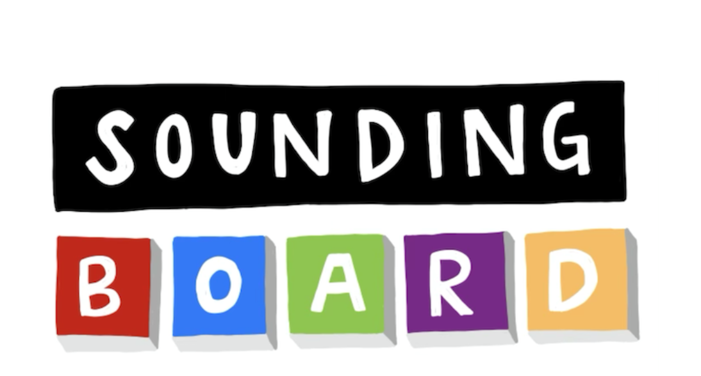
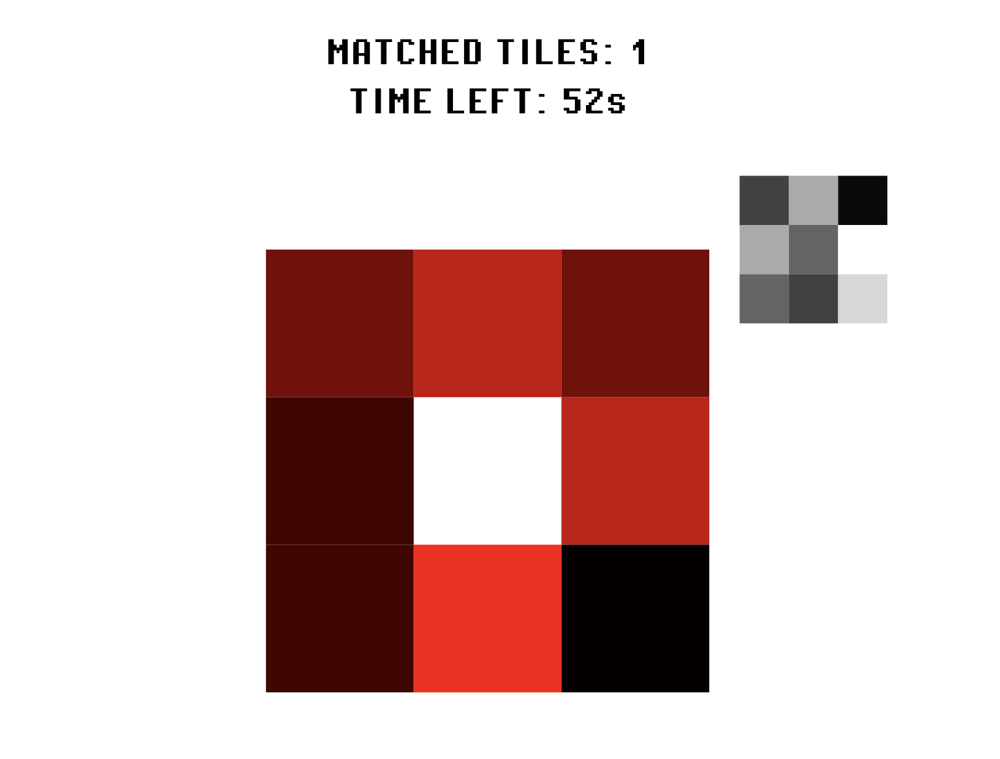

industry experience

Quant Trader | Virtu Financial
As part of the ETF Block desk, I built a full-stack opening-auction testing platform to improve regulation compliance. I also engineered a new instrument pricer, which outperformed the previous model on 99.7% of instances and is now in production. And I won first place in the intern trading competition :)

Climate Tech | J.P. Morgan NYC
I spent my sophomore summer at J.P. Morgan, where I was the first student intern on the Growth Equity Climate Fund.

Girls Who Invest | Summer Intensive Program
Back in my finance girlie era, I took classes on finance & management at Wharton for four weeks through GWI. I also got to invest in a lot of wonderful new friendships!!
leadership & community-building
President of Harvard WECode
I was honored to lead Harvard WECode 2024, the world's largest student-run women-in-tech conference, with 1000+ attendees from 25+ countries. In 2024, I revamped our finances & offerings to quadruple our annual revenue ($50k to $200k) to provide travel & lodging stipends to hundreds of attendees. Encouraging women to pursue tech is a cause I care deeply about, and one I hope to continue contributing to in the future.

House Events Chair
Harvard's residential life has given me a wonderful sense of community, so I decided to give back this year by serving as my house's events chair with my roommate. We hosted events every other week for over 400 students, with creative themes each time — including a live band competition!

HiLite Editor-in-Chief
In high school, journalism was my life. I started out as a reporter, then fell in love with graphics and page design, before finally serving as editor in chief of the 80-person staff my senior year. My roots in storytelling, design, and data analysis start here. Fundamentally, HiLite showed me how fulfilling it is to put your all into creating something meaningful — a feeling I've been chasing ever since.
select programming projects
Swingy Monkey
I used reinforcement learning to create an agent capable of achieving a score of 500+ on SwingyMonkey, a Flappy Bird variant.

Sounding Board
I built a social media platform for users to share audio sounds. It has functionality for users to upload and record their own sounds, explore the sounds of others, save sounds, and also has basic account configuration & privacy settings.

Pixel
I built an interactive tile-matching game with JavaScript, to teach people about color theory. I focused on human-computer interaction,
designing feedback cues and affordances to help users navigate the game on their own, as well as keep them playing. See if you can beat it!
Mini Shell
I built an interactive tile-matching game with JavaScript, to teach people about color theory. This was a great experiment in human-computer interaction, to understand how users interact with products, as well as
how to design feedback cues and affordances to help them navigate the game and keep them playing. See if you can beat it!
Color Encodings of Gender
I built an interactive tile-matching game with JavaScript, to teach people about color theory. This was a great experiment in human-computer interaction, to understand how users interact with products, as well as
how to design feedback cues and affordances to help them navigate the game and keep them playing. See if you can beat it!
Color Encodings of Gender
I built an interactive tile-matching game with JavaScript, to teach people about color theory. This was a great experiment in human-computer interaction, to understand how users interact with products, as well as
how to design feedback cues and affordances to help them navigate the game and keep them playing. See if you can beat it!
startups
Roberts Family Fellow
In college, I have taught CS1200 (Algorithms & Their Limitations), STAT 110 (Probability), CS51 (Abstraction & Design in Computation), and CS136 (Economics & Computation).
Harvard Undergraduate Capital Partners
In college, I have taught CS1200 (Algorithms & Their Limitations), STAT 110 (Probability), CS51 (Abstraction & Design in Computation), and CS136 (Economics & Computation).
HiLite Editor-in-Chief
In college, I have taught CS1200 (Algorithms & Their Limitations), STAT 110 (Probability), CS51 (Abstraction & Design in Computation), and CS136 (Economics & Computation).
mentorship & teaching
Teaching Fellow
In college, I have taught CS1200 (Algorithms & Their Limitations), STAT 110 (Probability), CS51 (Abstraction & Design in Computation), and CS136 (Economics & Computation).
Peer Advising Fellow
Mentored 25 first-year students in their transition to college
Mentorships
In college, I have taught CS1200 (Algorithms & Their Limitations), STAT 110 (Probability), CS51 (Abstraction & Design in Computation), and CS136 (Economics & Computation).